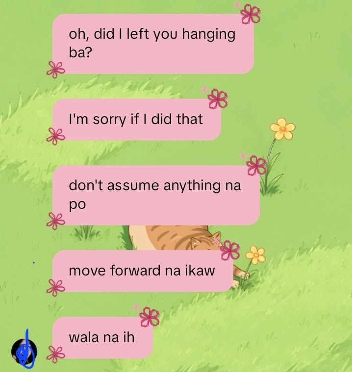

When the Past Still Feels Close
Holding on to memories that feel hard to let go.
Read More →on past relationships, regrets, and letting go

Not every ending is easy to accept. Some memories stay longer than we expect, and some lessons stay for life.
Read the Latest


People always say that time heals everything, but I don't think it's that simple. Sometimes, years pass and you still find yourself thinking about something that happened a long time ago. Past relationships are like that. You meet someone, share memories, and slowly become part of each other's lives. But not every story ends the way we want. Sometimes things fall apart because of misunderstandings, wrong choices, or things we were too afraid to say. What's harder is knowing there were things you could have done differently. You start asking questions that have no clear answers: What if I had been more honest? What if I had understood them better? What if I had tried harder when I still had the chance?
One of the hardest parts of looking back is remembering the things you wish you had done differently. You begin to understand things that you didn't understand before. Maybe you were too young, too careless, or simply didn't know how to handle the situation. You realize that some of your actions had consequences, and by the time you understood them, it was already too late. I think that's what makes past relationships difficult to forget. It's not always about wanting that person back. Sometimes, it's about wishing you had handled things better when you still had the chance. You can't go back and change your decisions, but you can learn from them. Still, knowing that doesn't always make the regret disappear.
I believe that moving forward doesn't always mean forgetting someone or pretending that nothing happened. Sometimes, it simply means accepting that things didn't work out, even if you still have questions. You can remember the good moments without expecting them to happen again. You can admit that you made mistakes without letting those mistakes define who you are today. It takes time to understand that not everything we lose is something we can get back. Some people become part of our past, and some experiences teach us things we probably wouldn't have learned any other way. Maybe the goal isn't to completely forget what happened. Maybe it's learning how to look back without letting it affect the way we live today.